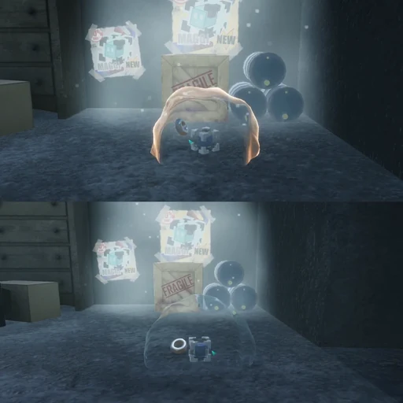
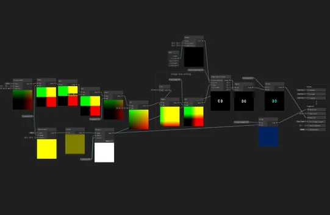
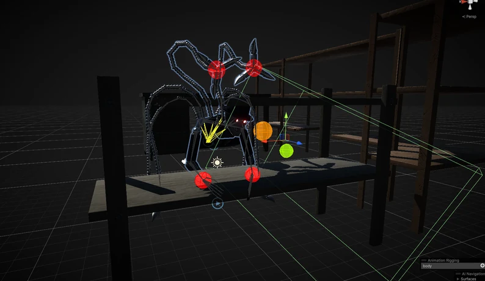
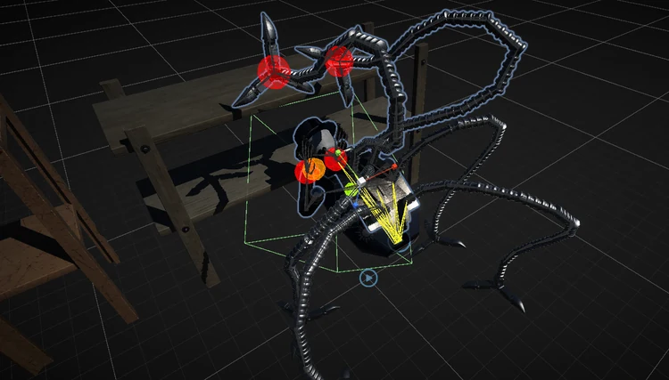

MAGGI
자석 능력을 표현하는 굴절, 픽셀 얼굴 애니메이션과 기계팔의 관절 제어를 구현한 기술 작업.

01 / Refraction
인력·척력 자성 이펙트

- 과제
- 인력과 척력의 자성 능력을 시각적으로 전달해야 했습니다.
- 구현
- 주변 공간이 일그러지는 굴절 셰이더를 제작했습니다.
- 결과
- 능력 사용에 맞춰 공간이 반응하는 자성 이펙트를 구현했습니다.
02 / Pixel animation
픽셀 얼굴 애니메이션


- 과제
- 캐릭터의 표정을 픽셀 얼굴로 표현해야 했습니다.
- 구현
- 텍스처 세트를 픽셀화하는 셰이더를 제작했습니다.
- 결과
- 캐릭터 얼굴의 픽셀 애니메이션을 구현했습니다.
03 / Rigging
기계팔 리깅


- 과제
- 관절이 다른 방향으로 꺾이거나, 팔을 뻗은 뒤 복귀 자세가 불안정해지는 문제가 있었습니다.
- 구현
- Pole 제어와 리깅 알고리즘을 조사해 적용했습니다. 기본 동작은 Blender에서 제작하고 상호작용은 Unity에서 제어했습니다.
- 결과
- 관절의 굽힘 방향과 복귀 자세를 제어하는 기계팔 동작을 구성했습니다.
CREDITS & SCOPE
기여 범위와 작업 기록
팀 프로젝트에서 자성 이펙트, 픽셀 얼굴 셰이더와 기계팔 리깅·애니메이션을 담당했습니다.
기록 기준: 2026.10 포트폴리오, 13–16쪽.